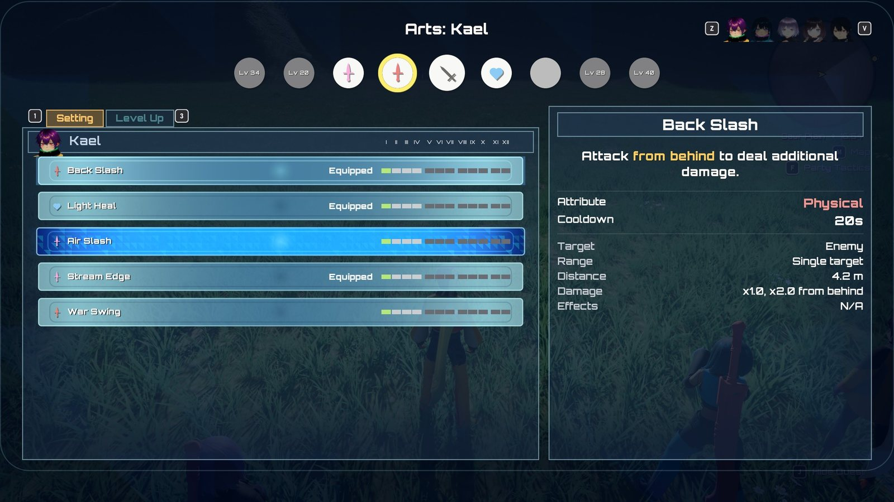

Arts¶
All · 15 min read · No code

The Arts screen: a character's Arts, their levels and details.
An Art is a special move a character picks from the combat palette. Every Art is described by
one data asset, an Art definition (UXenoCoreArtDefinition), and runs as a shared Gameplay
Ability (UXenoCoreGameplayAbility_Art) that reads everything it needs from that asset. Which Arts
a character knows, which ones sit on their palette and how far each is levelled are stored per
character on the party's progression component. The one idea that makes the rest make sense:
an Art is data. A standard Art needs no Blueprint and no code; you only write a Blueprint when an
Art needs behaviour the shared ability does not have.
See the Glossary for Art, Talent Art, palette and Break.
At a glance
In play: each character has a bar of Arts beside the Talent Art in the centre; pick one with the D-pad, it plays, lands its damage and effects, and greys out for its cooldown.
What you can change, no code:
- A new Art: Your first art, Create an attack art, Create a healing or support art
- What it inflicts: Make an art inflict reactions
- Who learns it, when, and where it sits on the bar: Palette slots
- A Talent Art: Create a Talent Art
- When companions and enemies use it: Tune companion AI
- Every setting: What you can change
How it fits together¶
| Piece | Class / sample asset | Job |
|---|---|---|
| Art definition | UXenoCoreArtDefinition · Battle/Arts/DA_XenoCore_AirSlash |
Name, power, cooldown, range, area, effects, montage, palette look |
| Talent Art definition | UXenoCoreTalentArtDefinition · Battle/Arts/DA_XenoCore_TurnStrike |
An Art definition plus a Gauge Cost |
| Shared Art ability | UXenoCoreGameplayAbility_Art · Battle/Arts/GA_XenoCore_Art_Base |
Range check, montage, impact timing, effects, cooldown, movement lock |
| Talent Art ability | UXenoCoreGameplayAbility_TalentArt · Battle/Arts/GA_XenoCore_TurnStrike |
Same, but paid from the Talent gauge instead of a cooldown |
| Per-Art ability (optional) | GA_XenoCore_BackSlash, GA_XenoCore_LightHeal |
Children of GA_XenoCore_Art_Base, carrying only their Art Data and their Ability.XenoCore.Art.* tag. Only for Arts that need their own ability; everything else runs as the base |
| Shared effects | GE_XenoCore_ArtCooldown, GE_XenoCore_ArtEffect, GE_XenoCore_Heal |
One cooldown effect and one damage/heal carrier for every Art |
| Learnset table | A DataTable of FXenoCoreArtUnlock rows · Characters/Party/Learnsets/DT_XenoCore_ArtLearnset_Default, set as Art Learn Table on the character's pawn Blueprint (AXenoCoreCombatantCharacter) |
Which Arts a character learns, at what level, in which starting slot |
| Loadout and levels | UXenoCoreProgressionComponent · Game/BP_XenoCore_Progression |
Known Arts, palette slots, Art levels, Art Points (AP) |
| Palette (HUD) | UXenoCoreArtsPaletteBase · UserInterface/HUD/W_XenoCore_ArtSlot |
Draws the Arts, greys unusable ones, shows cooldown rings and the Talent gauge |
| Palette input | GA_XenoCore_PaletteUp/Down/Left/Right/Confirm (UXenoCoreGameplayAbility_PaletteCycle) |
Move the selection, confirm the selected Art |
| Arts menu | UXenoCoreArtsScreenBase · UserInterface/Arts/W_XenoCore_ArtsScreen |
Arrange the palette (Setting tab) and spend AP (Level Up tab), switched with ZL / ZR |
The player's palette and the companion AI fire an Art the same way, so a companion's Art obeys exactly the player's range, cooldown and costs.
For programmers: how a press becomes a hit
- The palette input abilities never activate an Art themselves. They move or confirm the selection, and the target-mode ability turns the selected entry into an activation.
- The palette and the companion AI both fire an Art through one function, Fire Art
(
UXenoCoreGameplayAbility_Art::FireArt). - The progression component grants each palette Art to the pawn as an ability spec whose source object is the Art definition. That is how many Arts share one ability class and are still told apart.
- The ability class used is, in order: the definition's Ability Class, else whatever class
is already granting that Art, else the progression component's Default Art Ability Class
(
GA_XenoCore_Art_Base).
Lifecycle¶
Learning. Each character's pawn Blueprint points at a learnset: a DataTable whose rows are
FXenoCoreArtUnlock, set as Art Learn Table. When a character's record is created, and again
when they level up, every row at or below their level is learned. Rows are read sorted by
Unlock Level, so their order in the table does not matter. The first time, each row's
Default Slot places it on the palette; -1 means learned but not placed. An unset or empty
Art Learn Table means "keep whatever the character's ability sets grant", which is how enemies
and unauthored pawns behave.
A row's Art is a soft reference: reading the table does not load the Arts in it. An Art (its montage, effects and VFX) loads when the character learns it, at spawn or level-up, so Arts a character is still levels away from cost nothing. See Loading and ticking.
A character gets their own list by pointing at a different table. The shipped tables are in
Characters/Party/Learnsets/:
| Table | Used by | Arts (level learnt) |
|---|---|---|
DT_XenoCore_ArtLearnset_Default |
B_XenoCore_PartyMember_Base and the colour variants that do not set their own |
Back Slash, Light Heal, Air Slash (1) |
DT_XenoCore_ArtLearnset_Kael |
Kael (B_XenoCore_Party_VRoid_L) |
Back Slash, Light Heal, Air Slash, Stream Edge (1); War Swing (2) |
DT_XenoCore_ArtLearnset_Mira |
Mira (B_XenoCore_Party_VRoid_K), B_XenoCore_Party_Maroon |
Back Slash, Light Heal, Air Slash, Shield Bash, Wild Down (1) |
DT_XenoCore_ArtLearnset_Nia |
Nia (B_XenoCore_Party_VRoid_S), B_XenoCore_Party_Cyan |
Back Slash, Light Heal, Air Slash (1) |
DT_XenoCore_ArtLearnset_Dorran |
Dorran (B_XenoCore_Party_VRoid_C), B_XenoCore_Party_Lime |
Back Slash, Light Heal, Air Slash (1) |
DT_XenoCore_ArtLearnset_Isolde |
Isolde (B_XenoCore_Party_VRoid_M), B_XenoCore_Party_Purple |
Ember Ring, Ether Ward, Frost Lance (1); Mind Sap (3) |
DT_XenoCore_ArtLearnset_Sabine |
Sabine (B_XenoCore_Party_VRoid_Q), B_XenoCore_Party_Yellow |
Bellow, Hamstring, Venom Edge (1); Wild Down (2) |
DT_XenoCore_ArtLearnset_Tamsin |
Tamsin (B_XenoCore_Party_VRoid_Y), B_XenoCore_Party_Pink |
Bolster, Light Heal, Mending Wave (1); Slit Edge (2); Renewal (3) |
Open a table to see each row's Default Slot. Which character learns what, and when, is your project's call; the shipped tables are a starting point.
When a level-up teaches an Art, the level-up banner (W_XenoCore_LevelUp) adds a line
New Art FXenoCoreLevelUpEntry's
Arts Learned.
One example member gets Arts another way
The colour example PartyMember_Blue (not in the sample cast) uses B_XenoCore_Player as its
pawn, which is not built on the party base and has no Art Learn Table. Its Arts come from
AbilitySet_XenoCore_Hero.
Slotting. Slots are numbered in unlock order, not screen position, and the bar fills from the centre out: slot 0 sits immediately left of the Talent Art, slot 1 immediately right, slot 2 next left, slot 3 next right, and so on outward. The Arts menu strip and the battle palette both draw it this way. Default Slot and Art Slot Unlock Levels both count in this order, so the further a slot is from the centre, the later it opens. The Arts menu shows no slot numbers: a list row reads Equipped for an Art on the bar, an empty strip slot is Empty Slot, and a locked one is Locked Slot, whose detail line says This slot opens at level N.
Setting a palette slot (from the Arts menu, or the XenoSetArt console command)
re-grants the live pawn's Arts at once, so the HUD changes with no extra wiring. The Talent Art is
never on the palette row: it is granted by the equipped weapon's ability set (each sample
member's sword has its own set, for example Weapons/GreatSword/AbilitySet_XenoCore_JunkSword
grants GA_XenoCore_TurnStrike; the per-sword Talent Arts are children of
Battle/Arts/GA_XenoCore_TalentArt_Base) and sits in the palette's centre slot during battle. The centre slot shows whichever Talent Art the character was granted, with that
Art's own name, description and icon; the entry authored on the palette widget is only a fallback
for a character with none.
Activation. When an Art is used, the shared ability:
- Refuses if the target is outside the Art's Distance. This is a backstop: when the player picks an Art out of reach, target mode first runs the character in and uses it on arrival, so range never greys an Art on the palette.
- Commits, which puts the Art on cooldown. An Art that is interrupted or misses still cools down.
- Cancels the auto-attack, so the Art cuts into the swing instead of queueing behind it. This happens only once the commit succeeds, so an Art that cannot be paid for leaves the swing alone. After the Art the auto-attack starts again from its first swing.
- Plays the definition's Montage at Montage Play Rate, first turning the character to face the target over a short time.
- At Impact Fraction of the montage's length, applies the Art: its power as damage or healing, then each Effects entry whose condition is met. A damage Art aimed at enemies first makes the same contact roll as the auto-attack, for each hit and each target: it can miss (no damage, no effects on that target) or be blocked. A blocked Art does no Topple, and the attacker's recoil ends the Art, so its remaining hits never land. Ether Arts can miss well-levelled enemies but are never blocked. See Blocks and dodges.
- Ends when the montage completes, is interrupted or is cancelled. A failsafe ends it shortly after the montage's expected length if nothing else does.
While an Art runs, the character carries Status.XenoCore.ArtExecuting (every other Art is blocked
and shows as disabled on the palette) and Gameplay.MovementStopped (the character cannot walk or
turn). Both are removed on every way the Art can end.
Cooldown. One shared effect, GE_XenoCore_ArtCooldown, is applied with the Art's own
Cooldown Duration and its own Cooldown Tag. The palette ring reads that tag. The effect
comes from the art ability's Default Cooldown Effect Class (ships as GE_XenoCore_ArtCooldown),
used whenever the ability's own Cooldown Gameplay Effect Class is unset, so data-only Arts and
Blueprint Arts both cool down with nothing to set.
Talent Arts. A Talent Art has a Cooldown Duration of 0 and costs gauge instead. The gauge
(TalentGauge, 0 to 100) fills by the character's TalentChargePerHit each time an auto-attack
lands, through GE_XenoCore_TalentCharge. The centre slot lights once the gauge covers the
Art's Gauge Cost, the same test the ability uses. The gauge is spent when the Art activates, so a
Talent Art that misses still costs its gauge. Nothing resets the gauge after a fight, but it lives on
the character's body, so a benched member or a party wipe starts again from empty.
Levelling. Each character banks Art Points from kills (Art Points Base + Art Points Per Enemy Level × the enemy's level, times the level-difference reward multiplier; quests pay none). See Progression. Spending AP raises an Art one level, up to its cap. Every Power, Cooldown Duration and Effects curve reads the Art's level. Talent Arts cannot be levelled.
What you can change¶
On the Art definition¶
| Setting | Where it lives | What it does |
|---|---|---|
| Ability Class | Art definition › Art | Leave empty for a data-only Art. Set only for an Art with its own Blueprint. |
| Display Name, Description | Art definition › Art | The palette shows Name: Description; the Arts menu shows both |
| Icon | Art definition › Art | Texture for menus |
| Category | Art definition › Art | Physical, Ether, Break, Topple, Daze, Buff, Debuff or Heal: the type colour |
| Attribute | Art definition › Art | Physical or Ether: which stats the damage reads |
| Effect Type | Art definition › Art | Damage, Heal, or No damage or healing |
| Target Type | Art definition › Art | Enemy, User, One ally (opens the ally selector) or Whole party |
| Distance | Art definition › Art | Maximum range in cm, centre to centre. Default 420. 0 = no limit |
| Power | Art definition › Art | Magnitude, a curve keyed by Art level. Value multiplies the curve, so it must not be 0 |
| Cooldown Duration | Art definition › Art | Seconds, keyed by Art level. 0 = no cooldown (Talent Arts) |
| Cooldown Tag | Art definition › Art | Must be unique to this Art |
| Montage, Montage Play Rate, Impact Fraction | Art definition › Art › Animation | The strike, its speed, and when in it the hit lands (default 0.45) |
| Time Dilation, Time Dilation Keeps User Speed, Time Dilation Start / End | Art definition › Art › Time Dilation | Slow motion while the Art plays. 1.0 = off (the default; Turn Strike uses 0.35). Keeps User Speed holds the attacker at normal speed while the world slows. Start and End are a window in fractions of the montage; a narrow window around the hit is a hit-stop |
| Hits, Hit Spacing | Art definition › Art › Hits | How many times the Art strikes, spaced in fractions of the montage from Impact Fraction. Every hit deals the full Power |
| Force Multiplier | Art definition › Art › Hits | How hard each hit knocks its target back, as a multiple of the target's Push Distance (default 1; the shipped damage Arts use 2). 0 = no knockback. Every hit of an Art aimed at enemies also makes the target flinch |
| Lunge Multiplier | Art definition › Art › Hits | Lyra's melee lunge: the first hit that connects also drives the user into the target. 0 (off) by default; the lunge's own values are Lunge on the Art's ability class |
| Impact Event Tag | Art definition › Art › Hits | Take the hits from the animation instead: every XenoCore Gameplay Event notify with this tag on the montage is one hit, and the fractions are ignored |
| Talent Charge, Talent Charge Per Enemy Hit | Art definition › Art › Talent Gauge | Talent Gauge gained, out of 100: once per use, or for every enemy on every hit. Paid only if the Art reaches an enemy |
| Cast FX, Cast Socket, Cast Sound | Art definition › Art › Cosmetics | Played on the attacker when the Art starts, at that socket or bone (empty = the character's root) |
| Impact FX, Impact Sound | Art definition › Art › Cosmetics | Played on every enemy, on every hit, where the strike lands |
| Area FX, Area FX Authored Radius | Art definition › Art › Cosmetics | Area Arts only: played once per hit on the ground at the area's centre. Give the radius the effect was made at and it scales to Area Radius; 0 = unscaled |
| Hit Feedback, Hit Camera Shake | Art definition › Art › Cosmetics | Turn the hit shake and controller rumble off, or give this Art its own shake |
| Palette Glyph, Glyph Colour, Palette Order | Art definition › Art › Palette | The palette icon material, its colour when usable, and its order among Arts not in the stored palette |
| Base Level Up Cost | Art definition › Art › Level | AP from level I to II. Default 300 |
| Area, Area Radius, Cone Angle | Art definition › Art › Area | Single target, circle around user or target, or cone. Radius in cm, angle in degrees. The Arts menu's Range line reads it, e.g. Cone ahead, 120°, 8 m |
| Effects | Art definition › Art › Effects | Statuses and reactions it applies: see below |
| Positional Bonuses | Art definition › Art › Positional | Position, Power Multiplier, Announce Chance per entry |
| Threat | Art definition › Art › Aggro | Aggro this Art builds on the enemies it reaches (default 10). See Aggro |
| Usable By AI, AI Priority, AI Chain Bonus, AI Wait For Reaction, AI Conditions | Art definition › Art › Companion AI | Whether and when companions and enemies use it. See How a companion chooses an art |
| Tint FX By Category | Art definition › Art › Cosmetics | Tint the Art's effects with its type colour (on by default) |
| Gauge Cost | Talent Art definition › Talent Art | Gauge spent, out of 100. Default 100 |
Every effect field takes a Niagara system or an older Cascade particle system, so effects from Epic's sample projects and Paragon work as they are. An empty field keeps the shared look every Art has: the damage sparks and number, the montage's own trail, the shared hit shake.
See an area as you tune it
Type XenoCore.Arts.DrawArea 1 in the console during play. Each Art draws its circle or cone at
the moment it lands, puts a green sphere on every enemy it reached, and labels the count.
XenoCore.Arts.DrawArea 0 turns it off; it is off by default and never appears in a shipped
build. XenoCore.Arts.DrawAreaSeconds sets how long each drawing stays.
Fails silently: a looping effect in an Art's FX field
An Art spawns a new effect every use and never destroys it, so a looping system piles up for the rest of the session. Use one-shot (burst) systems in Cast FX, Impact FX and Area FX.
Fails silently: a custom Hit Camera Shake has no rumble
Hit Camera Shake replaces the shared hit cue, and the controller rumble lives on that cue. An Art with its own shake does not rumble.
Impact Event Tag on a montage without the notify
The Art still lands one hit, when the montage ends, and the Output Log warns that the montage
never sent the event. Add an XenoCore Gameplay Event notify with that tag on the contact frame.
Statuses (the Effects list), and User or Whole party entries, land on the first hit of a multi-hit Art only; damage, numbers and impact effects land on every hit. If an enemy blocks a hit, the attacker recoils and the Art ends there, so its remaining hits never land.
For a montage that should always slow time wherever it plays, put the XenoCore Time Dilation
notify state on it instead of setting Time Dilation on each Art. Arts often share a montage, so
a notify there slows every Art that uses it.
Each Effects entry has Effect (a GE_XenoCore_Status_* or GE_XenoCore_Reaction_*),
Chance (0 to 1), Duration and Magnitude (curves keyed by Art level, sent to the status),
Condition (Always, In the art's position, From the side, From behind, From the front, Target is
Broken, Target is Toppled, Target is Dazed), Recipient (Each target, User, Whole party) and
Announce Chance. Conditions are judged on the target as it was before this hit, so one Art
cannot Break and then Topple with the same press.
Two Arts sharing a Cooldown Tag share one cooldown
Using either Art puts both on cooldown. An Art with a cooldown but no Cooldown Tag cools down invisibly: the palette shows it ready while it refuses to fire. The editor checks both when you save an Art definition (or run Validate Assets): a missing tag on an Art that cools down at any level is an error, and a tag another Art definition also uses is an error naming the other Arts. The shared-tag check runs in the editor only, so an Art never saved or validated there can still slip through.
Fails silently: Power or a status Duration left at 0
Power multiplies its curve, so a Value of 0 deals nothing whatever the curve says. A
status whose duration comes from the Art lasts zero seconds if the entry's Duration is 0.
Data validation reports the second case on save.
What saving an Art definition checks
| Problem | Reported as |
|---|---|
| Empty Display Name | Error |
| A cooldown at any level, but no Cooldown Tag | Error |
| A Cooldown Tag another Art definition also uses | Error (editor validator) |
A status entry whose duration comes from the Art, with Duration 0 |
Error |
| No Montage: the Art plays no animation, its effect lands at once and it ends | Warning |
| No Palette Glyph | Warning |
| A heal aimed at an Enemy | Warning |
Fails silently: a montage on the wrong slot
An Art montage must play on a slot in the DefaultGroup slot group. On another group it blends
wrongly with no error.
On the progression component¶
Game/BP_XenoCore_Progression, Class Defaults, category XenoCore › Arts:
| Setting | What it does |
|---|---|
| Default Art Ability Class | The ability data-only Arts run as. Ships as GA_XenoCore_Art_Base |
| Art Slot Unlock Levels | Character level that opens each palette slot, in unlock order (drawn centre-out). Ships as 1, 1, 1, 12, 20, 28, 34, 40; keep it ascending. Set all eight to 1 for a full bar from the start |
| Default Art Level Cap | Highest level without a manual. Default 4 |
| Art Level Cost Multipliers | Multiplier on Base Level Up Cost for levels II to XII |
| Art Points Base | The flat part of a kill's AP. Default 2.0 |
| Art Points Per Enemy Level | AP per level of the defeated enemy. Default 2.0 |
On the character¶
Art Learn Table (Class Defaults › XenoCore › Arts) on the pawn Blueprint, beside
Skill Tree: a DataTable whose row structure is XenoCoreArtUnlock (the picker offers no other
kind). Each row has Art (loads when learnt), Unlock Level (1 or more) and Default Slot (0 to 7 in
unlock order, or -1 for learned but unslotted). The row name is free text; Lv01_BackSlash is
the convention because it sorts in the editor. Learnsets can be CSV-imported like any DataTable.
To give a character their own list, create a DataTable with row structure XenoCoreArtUnlock, or
duplicate DT_XenoCore_ArtLearnset_Default (a table, not a concrete Art, so duplicating it is
fine), then set that character's Art Learn Table.
On the Talent Art ability¶
Talent Gauge Effect (XenoCore › Talent). Slow motion is no longer set here: it is the Time Dilation group on the Art definition, so any Art can use it.
Extending it¶
- A new standard Art: create it blank in your own folder (
Content/MyGame/Arts): right-click › Data › Data Asset ›XenoCoreArtDefinition. Fill in the fields, give it its own Cooldown Tag, and add a row for it to a character's learnset. Do not duplicate a concrete Art such asDA_XenoCore_AirSlash: the copy brings Air Slash's Break and side-Slow effects with it.DA_XenoCore_SlitEdge,DA_XenoCore_StreamEdgeandDA_XenoCore_WarSwingare examples built this way. Kael learns Stream Edge (a cone) at level 1 and War Swing (a circle around him) at level 2; Tamsin learns Slit Edge at level 2. See Your first art and the recipes Attack art, Support art and Palette slots. - An Art with custom behaviour: create a Blueprint child of
GA_XenoCore_Art_Baseand point the definition's Ability Class at it. Do not override Activation Owned Tags on it: an override replaces the base's container rather than adding to it, and silently drops the lock-out and movement-stop tags. - A new Talent Art: create a blank
XenoCoreTalentArtDefinition, make a child Blueprint ofGA_XenoCore_TalentArt_Baseand point its Art Data at the new definition, and grant the ability from the weapon's ability set. See Talent art. - Reactions and statuses an Art applies: see Reactions and statuses.
- Never edit
GA_XenoCore_Art_Base,GE_XenoCore_ArtCooldownorGE_XenoCore_ArtEffectin place: every Art in the game uses them.
Why it's built this way¶
For programmers: the design reasons
- One asset per Art. Arts are granted as ability specs with the definition as source object, so any number share one ability class. A per-Art Blueprint and unique ability tag is no longer needed.
- Cooldown from the definition. The ability overrides
GetCooldownTagsand applies one shared effect with a SetByCaller duration and the Art's tag as a dynamic granted tag, so no per-Art cooldown asset can drift. It commits in C++, so no Art Blueprint can forget to. - Tags for lifetimes. The lock-out and movement stop are
ActivationOwnedTags, removed by GAS on every end path, and the shared ability binds every montage end delegate (bAllowInterruptAfterBlendOuttrue) so an interrupted Art can never leave the character frozen. - Levels on the progression component, keyed by the member definition, because a benched character has no pawn and the Arts menu still has to edit them.